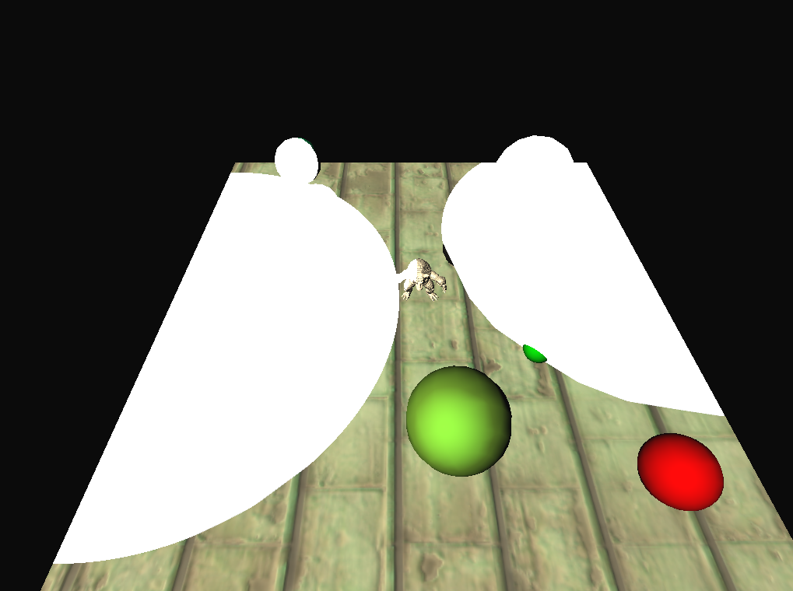
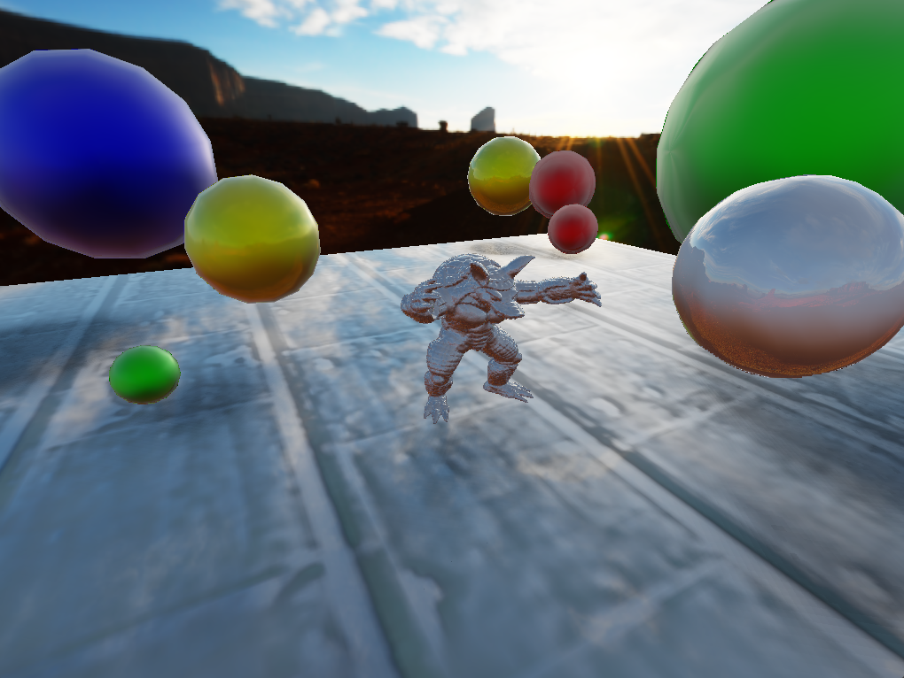
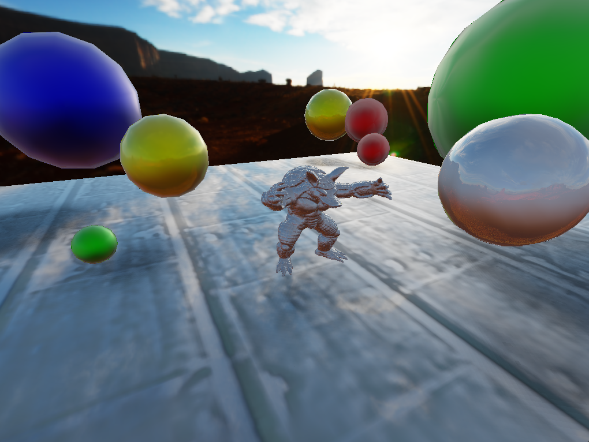

Graphics EngineUsed API: OpenGLTeam size: solo projectDuration: two year project (WIP)

In Digipen Sophomore year, I've made my first 3D graphic engine which is written in OpenGL.
I learned the essential concepts of 3D Graphics, including transformations from model to NDC coordinates, the Graphics Pipeline, shadows, cameras, and communicating between user's input and objects.
Furthermore, I implemented a blinn-phong shading and a directional light projection shadow in this project for shading essentials.
In Digipen Junior year, I improved 3D graphic engine with knowledgement of advanced graphic techniques.

The first milestone, I implemented obj file loader, and my GUI. In the picture, the engine successfully loads a rabbit model. Static lighting is applied. Furthermore, I implemented my custom graphic user interface(GUI). It can rotate the imported model, toggle visibility of normals of the model.

The second milestone, I implemented three shaders and applied dynamic lightings.
I implemented Phong Lighting, Phong Shading, and Blinn Shading.
Phong Lighting computes diffuse and specular colors by calculating reflection vector in vertex shader. Phong Shading, technically similar to Phong lighting, performs lighting calculations in the fragment shader. In contrast, Blinn shading utilizes the half vector instead of the reflection vector in the fragment shader. As a conclusion of shading discussion, Blinn-Phong shading provides similar results to Phonng shading but is computationally more efficient, as it avoids the need for costly reflection vector calculations.
I used uniform block to send lighting information to GPU.

The third milestone, the engine is able to represent reflection, and refraction.
I implemented frame buffer objects to capture in-game textures, and use it to represent reflection, and refraction.

Furthermore, I used Fresnel approximation(Schlick's method) to combine reflection, and refraction together.

The fourth milestone, I improved object loader, and implemented deferred rendering.
Now object loader used Assimp to load assets. Thus, the engine does not restrict assets file format as long as Assimp supports.
The image provided illustrates deferred rendering, where the below small four images representing position, UV, normal, and camera-distance from the left to right. In deferred rendering, all objects are initially rendered, generating images similar to the four mentioned above in the first pass. In the second pass, the four images are combined, and the lighting calculations are performed exclusively during this pass. Deferred rendering improves rendering time, particularly when there are numerous objects and lights. However, it comes with drawbacks such as increased memory usage due to the G-buffer and the need for additional effort to support multiple materials and transparency.
Enhanced lightings 
Spheres are drawn to represent the range of lights. In the fragment shader, local lights are calculated only in the spheres where lighting has an effect, reducing unnecessary computations.
Soft shadowCreat shadow maps storing depth value by the perspective of sun, then apply blur using summed-area-table. Thus, I could produce soft shadow like the image below.
 Image based lighting & GPU-Based Importance Samping

Image based lighting & GPU-Based Importance Samping

Apply skybox and image based lightings inspired by GPU GEM3 article.